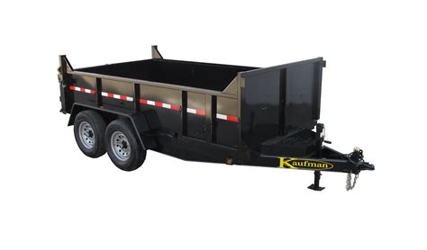
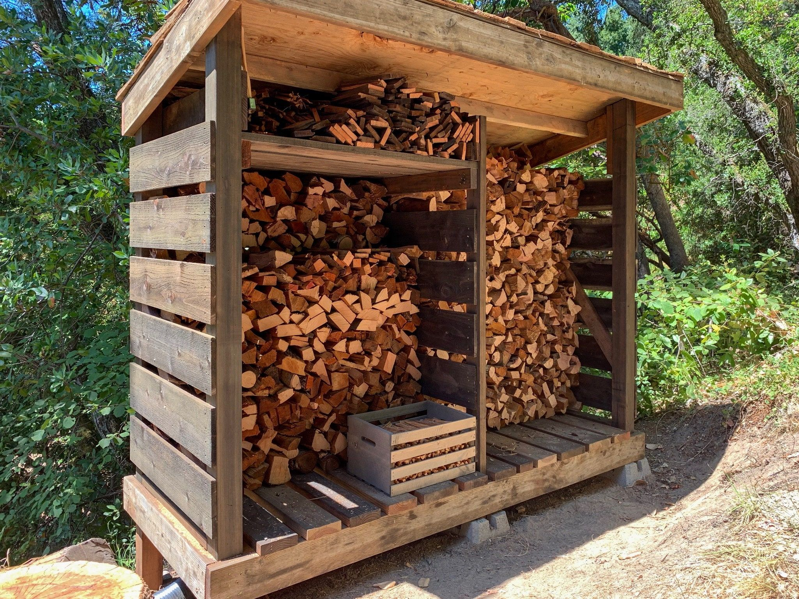
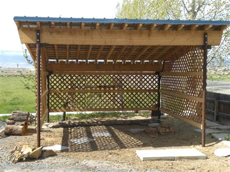
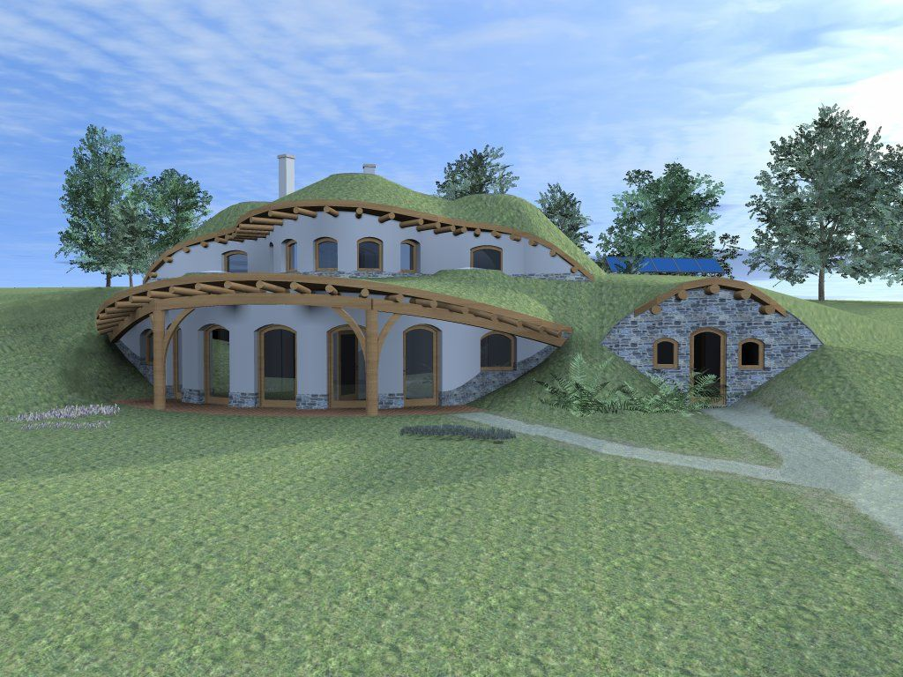
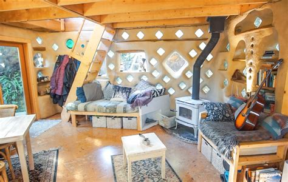
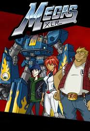

Shelter
Introduction
Look Into Files = [blog126]
Chain System = Tain Lines = With Stations Concept

Planeting Seed In A Mathmatical Frame = Prinicple Of The Nile River With Branch Off Streams

Cooking Equipment From = Stove Clay - Bread For Public = Server Yourself & Community Bring Flower
Fire Tools = Iron Pot = Hole Or Fire Place Or Standing Grill

Now Plan Road Point & Path Point = While Planeting Garden = Be Open Minded
Mind When Expanding This System = Open SOure = Be A Team Play & Have Good Reason For Replayings Someones Crop In The Chain
Apply Market Princaples In The Chain [Tails Os Principle]

Now Flexable Mind To Building On Top Of This System Or Next Too Or Chain

Make Sure Tools Left By Are Child Friendly = Community May Want To Store Some Equipment In The Open & Yet Must Not Over Time Or Quickly Block The Public Trust For A Few = Market Growth Collapse
Once Uppen Communiyt Awarenss On The Importance Of The Train Line [Example] = You Can Allow More Luxuary Upgrade On The Line
Keep Flat Field = For Entrance = Long Term Fall = May Planet Seed In Community Mind To Block It Off = On A Long Time Line
Now Once Teaching & Building Are Active In Expansion = A New Market For Skills & Points System For Other Markets = Chain To A Crypto / Community - Certificate By [1] - 4 To 5 + Contact Of Affirmation
Schools Can Attach & Claim It To Be A Social Program = If Works = Investment Paid Off
Learn Reasource Managment & Dump / Recycle Chain & Jump Off For Lesson In Market & Trade = Example Second Hand Market = Level Up 3 & 4 .... On It Goes
